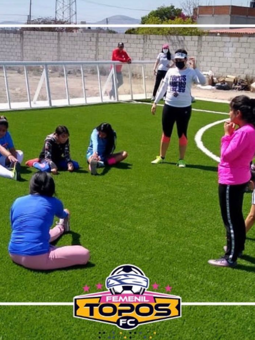

Topos F.C. Femenil |
 |
Somos el primer equipo femenil de Fútbol para Ciegas y Débiles Visuales en México. A partir de 2016 hemos impulsado la categoría femenil del fútbol adaptado, buscando abrir más oportunidades para la práctica del fútbol adaptado en el país. El esfuerzo de entrenadoras y jugadoras se ha reflejado en diversas actividades, como el primer partido de fútbol adaptado femenil en México, y el primer partido internacional de clubes, que se llevó a cabo en la ciudad de Puebla contra nuestra similar de Argentina: Las Guerreras de Córdoba. |